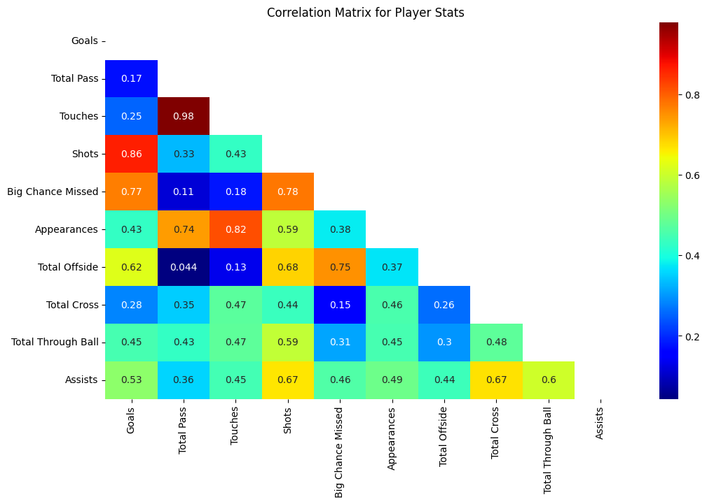
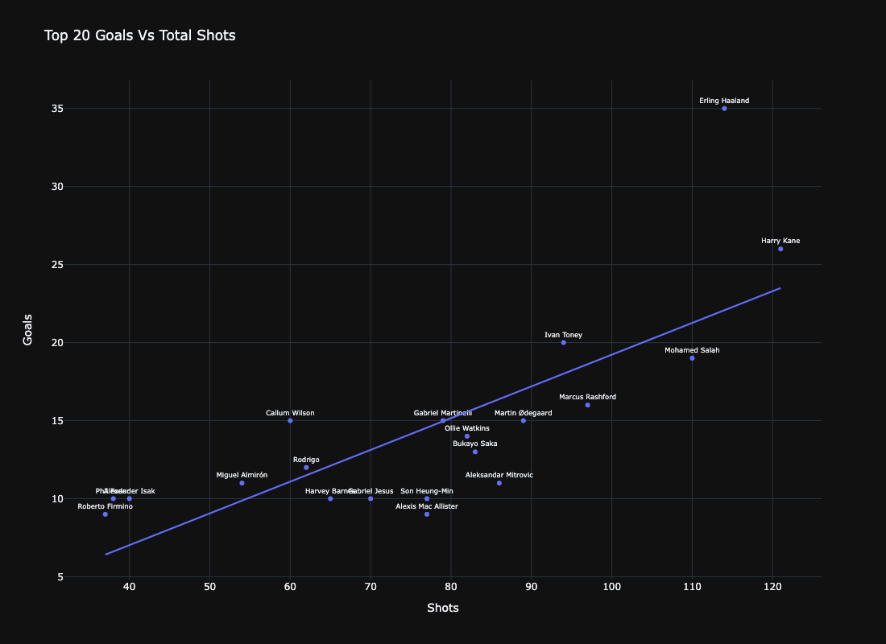
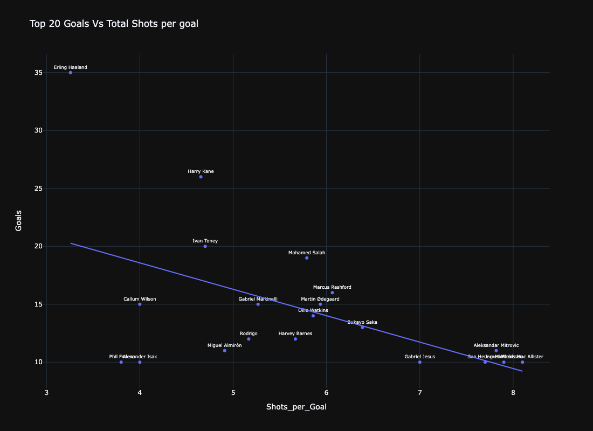
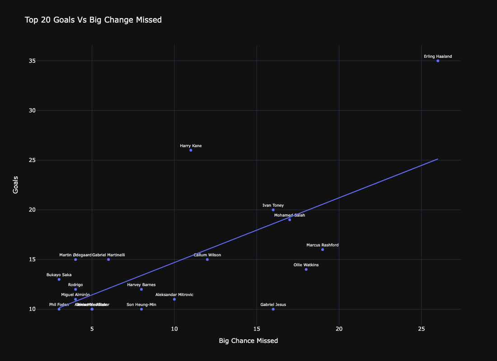
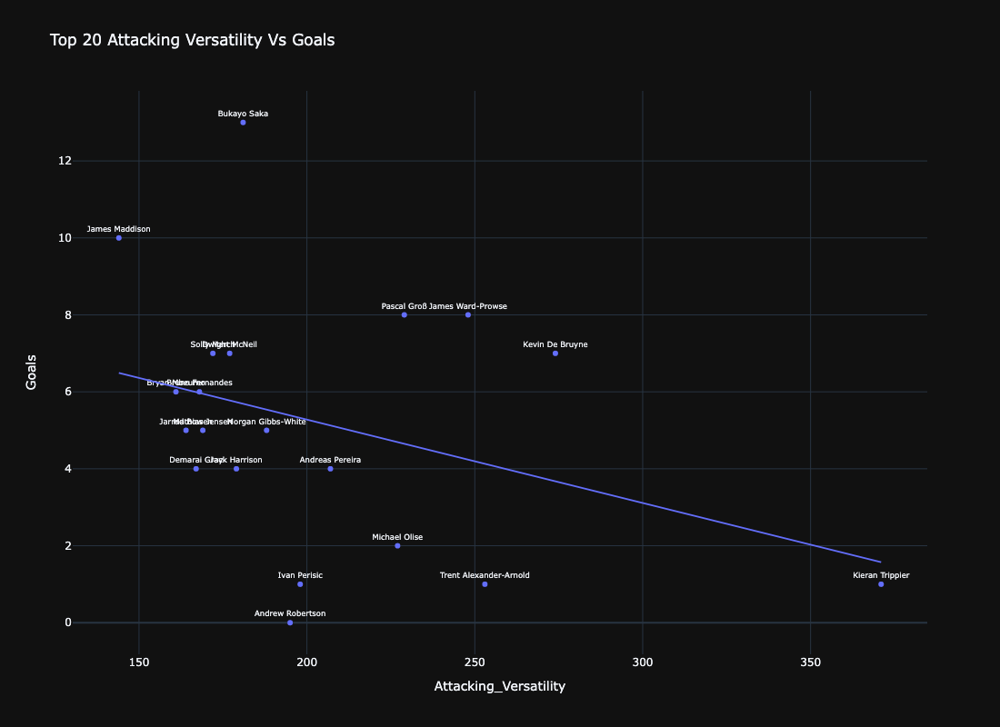

Football Exploratory Analysis

English Premier League Data Scraping and Analysis
The English Premier League is renowned as the most popular football league globally, with its widespread media appeal and fast-paced, high-intensity football style. Analysts can relish the wealth of data generated throughout an entire season. In this project, we'll scrape goal-scoring statistics for the recently concluded 2022/23 season from the Premier League's official website and conduct exploratory data analysis (EDA).
Data Source
The official website of the English Premier League, https://www.premierleague.com, houses fascinating player statistics data that can be analyzed for intriguing insights. Although the website does not have a native API, we can still obtain the data directly from the HTML pages while considering the source data table's pagination.
Web Scraping
To overcome this challenge, we'll employ web scraping using a combination of Selenium and automation through Nerodia/Watir, while parsing the data with Pandas. Web scraping is an automated method for extracting content and data from a website.
After we got the data let make some Exploratory Data Analysis.
Exploratory Data Analysis (EDA)

It is evident from the data that only two clubs, Manchester City and Arsenal, had upper fence values of 10 in terms of goals scored, with one outlier scoring 35 goals and two outliers scoring 15 and 13 goals, respectively. These clubs were the top performers in terms of goals scored in the 2022/2023 Premier League season. It is worth noting that all clubs in the Premier League had players who were considered outliers in terms of goal-scoring for the season.
To examine the relationships between various metrics and their connection to goal-scoring, as well as their interdependence, a correlation matrix can be utilized. While correlation does not necessarily indicate causation, it provides a useful measure of the strength of the association between variables.
From the correlation matrix, the following observations can be made:
The number of goals scored shows the strongest correlation with total shots (0.86), big chances missed (0.77), and offsides (0.63). This suggests that the most prolific goal-scorers in the league tended to take numerous shots at goal, thereby increasing their chances of scoring. Consequently, these players also missed a significant number of opportunities. As anticipated, these high-scoring players often occupied advanced positions on the field, resulting in a greater number of offsides.
There is a relatively weak correlation between goals scored and total passes (0.18), touches (0.25), and total crosses delivered (0.28). This implies that a player's proficiency in passing and assisting had little bearing on their overall goal-scoring abilities. It seems that the most effective goal-scorers primarily focused on converting chances into goals – a testament to the enduring importance of the classic number 9 role.
Further data visualization and Analysis
Let's do a scatterplot of goals vs total shots for the top 20 goalscorers.
A strong positive correlation can be observed between the number of goals scored and the total shots taken by players. For instance, Erling Haaland, who scored the most goals (35), also had the highest number of total shots (108). Similarly, Harry Kane scored 25 goals and had 120 shots. This relationship indicates that the more shots a player takes, the higher their chances of scoring goals. This could suggest that players who are more proactive and willing to take risks in front of the goal tend to score more.
Goals vs Total Shots per Goal to demonstrate the shooting efficiency of players
Calculating shots per goal (Total Shots / Goals) can provide insight into a player's shooting efficiency. A lower shots per goal ratio indicates that a player requires fewer attempts to score, demonstrating their accuracy and effectiveness in converting chances. For example, Erling Haaland's shots per goal ratio is 3.08 (108/35), while Harry Kane's is 4.8 (120/25). Comparing these ratios, Haaland is more efficient in converting his shot attempts into goals than Kane.
It is possible that Manchester City's strong midfielders are creating numerous big chances for Haaland, contributing to his increased efficiency compared to other players. To investigate this, we can plot Goals against Big Chances Missed to gain further insights.
Analyzing the relationship between goals scored and big chances missed can shed light on a player's ability to capitalize on crucial goal-scoring opportunities. A higher number of big chances missed may indicate that a player tends to squander valuable scoring chances, potentially affecting their overall goal tally. For instance, Erling Haaland scored 35 goals but missed 23 big chances, whereas Gabriel Jesus scored only 10 goals and missed 16 big chances. In this case, Haaland was able to score more goals despite missing several big chances, while Jesus' goal tally suffered due to his inability to capitalize on important scoring opportunities.
Through these 3 plots, Erling Haaland's outstanding performance across various metrics sets him apart as an outlier among his peers. His goal-scoring ability, shot-taking frequency, and efficiency in converting chances make him a highly valuable asset for his team. Although there's still room for improvement in capitalizing on big chances, Haaland's overall performance is undeniably exceptional.
Erling is exceptional in his favor - scoring but I still want to explore more about the attacking versatility which assessing a player's performance across multiple attacking metrics.
The top 20 players in terms of attacking versatility showcase a wide range of talent, including midfielders, wingers, and fullbacks, who contribute significantly to their teams' attacking prowess through crosses, through balls, and assists. Erling Haaland, despite being the league's top goal-scorer, does not feature in this top 20 list, suggesting that his contribution to his team's offense is more focused on finishing chances rather than creating them for others.
Conclusion
In this analysis, we utilized data scraped from the EPL website, cleaned and prepared it, and subsequently examined various player performance metrics. The results revealed Erling Haaland's exceptional goal-scoring abilities. His outstanding performance in scoring goals, taking shots, and efficiently converting chances positions him as a valuable asset for his team. However, Haaland's absence from the top 20 list of attacking versatility suggests that his primary contribution to the team's offense is finishing chances rather than creating opportunities for others.
The top 20 players in attacking versatility demonstrate the importance of having a diverse range of talent on a team, with midfielders, wingers, and fullbacks contributing significantly to the team's attacking success through various means, such as crosses, through balls, and assists. Overall, having a well-rounded and balanced team capable of both creating and capitalizing on goal-scoring opportunities is essential for success in the highly competitive English Premier League.
The entire script and further explaination for this article can be found at my Deepnote and Github page.